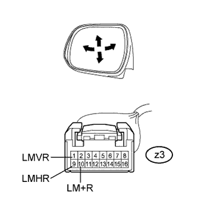
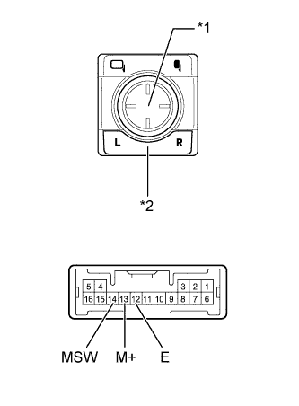

POWER MIRROR CONTROL SYSTEM > Driver Side Power Mirror cannot be Adjusted with Power Mirror Switch |
| 1.CHECK CAN COMMUNICATION SYSTEM |
Check if a CAN communication DTC is output (Click here).
| Result | Proceed to |
| DTC is not output | A |
| DTC is output | B |
|
| ||||
| A | |
| 2.READ VALUE USING INTELLIGENT TESTER (OUTER MIRROR SWITCH) |
Using the intelligent tester, read the Data List (Click here).
| Tester Display | Measurement Item/Range | Normal Condition | Diagnostic Note |
| Mirror Selection SW (L) | Mirror select switch signal for LH mirror / ON or OFF | ON: Mirror select switch in L position OFF: Mirror select switch off or in R position | - |
| Mirror Position SW (R) | Mirror adjust switch signal (Right) / ON or OFF | ON: Mirror adjust switch pressed right OFF: Mirror adjust switch not pressed right | Check with the mirror select switch in the L position. |
| Mirror Position SW (L) | Mirror adjust switch signal (Left) / ON or OFF | ON: Mirror adjust switch pressed left OFF: Mirror adjust switch not pressed left | Check with the mirror select switch in the L position. |
| Mirror Position SW (Up) | Mirror adjust switch signal (Up) / ON or OFF | ON: Mirror adjust switch pressed up OFF: Mirror adjust switch not pressed up | Check with the mirror select switch in the L position. |
| Mirror Position SW (Dwn) | Mirror adjust switch signal (Down) / ON or OFF | ON: Mirror adjust switch pressed down OFF: Mirror adjust switch not pressed down | Check with the mirror select switch in the L position. |
|
| ||||
| OK | |
| 3.PERFORM ACTIVE TEST USING INTELLIGENT TESTER (MIRROR CONTROL FUNCTION) |
Select the Active Test, use the intelligent tester to generate a control command, and then check the mirror control function (Click here).
| Tester Display | Test Part | Control Range | Diagnostic Note |
| Mirror Up/Down | Mirror vertical operation | Up / Down | - |
| Mirror Right/Left | Mirror horizontal operation | Right / Left | - |
|
| ||||
| OK | ||
| ||
| 4.INSPECT OUTER REAR VIEW MIRROR ASSEMBLY LH |
|  |
Remove the outer rear view mirror assembly LH (Click here).
Apply battery voltage and check the operation of the outer rear view mirror assembly LH.
| Measurement Condition | Specified Condition |
| Battery positive (+) → Terminal z3-1 (LMVR) Battery negative (-) → Terminal z3-10 (LM+R) | Turns upward |
| Battery negative (-) → Terminal z3-1 (LMVR) Battery positive (+) → Terminal z3-10 (LM+R) | Turns downward |
| Battery positive (+) → Terminal z3-9 (LMHR) Battery negative (-) → Terminal z3-10 (LM+R) | Turns left |
| Battery negative (-) → Terminal z3-9 (LMHR) Battery positive (+) → Terminal z3-10 (LM+R) | Turns right |
|
| ||||
| OK | ||
| ||
| 5.INSPECT OUTER MIRROR SWITCH ASSEMBLY |
|  |
Remove the outer mirror switch assembly (Click here).
Measure the resistance according to the value(s) in the table below.
| Tester Connection | Switch Condition | Specified Condition |
| 13 (M+) - 12 (E) | Mirror select switch L Mirror adjust switch pressed up | 90 to 110 Ω |
| Mirror select switch L Mirror adjust switch pressed down | 437 to 503 Ω | |
| Mirror select switch L Mirror adjust switch pressed left | 744 to 856 Ω | |
| Mirror select switch L Mirror adjust switch pressed right | 225 to 275 Ω | |
| 14 (MSW) - 12 (E) | Mirror select switch L | 90 to 110 Ω |
| Mirror select switch off | 10 kΩ or higher |
| *1 | Mirror Adjust Switch |
| *2 | Mirror Select Switch |
|
| ||||
| OK | |
| 6.CHECK HARNESS AND CONNECTOR (MAIN BODY ECU - OUTER MIRROR SWITCH) |
Disconnect the G46 ECU connector.
Disconnect the G6 switch connector.
Measure the resistance according to the value(s) in the table below.
| Tester Connection | Condition | Specified Condition |
| G46-15 (MIRE) - G6-12 (E) | Always | Below 1 Ω |
| G46-13 (MIRB) - G6-13 (M+) | Always | Below 1 Ω |
| G46-14 (MIRS) - G6-14 (MSW) | Always | Below 1 Ω |
| G46-15 (MIRE) - Body ground | Always | 10 kΩ or higher |
| G46-13 (MIRB) - Body ground | Always | 10 kΩ or higher |
| G46-14 (MIRS) - Body ground | Always | 10 kΩ or higher |
|
| ||||
| OK | ||
| ||